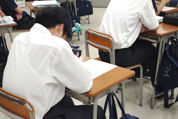

活動記録
活動記録
授業の外へ広がる、見学・講演・検定・制作・発表の記録です。
教室の外で確かめる
見学、講演、資格、大会、発表
操作を覚えるだけでは、進路はまだ見えません。大学や専門学校の授業、業界で働く人の話、共通問題のある試験、外部審査のある大会へつなぎ、自分の得意と課題を確かめます。
- 大学・専門学校見学
- ゲーム・Web体験
- 国家試験・検定
- 情報モラル
- 作品発表・大会



活動記録
授業の外へ広がる、見学・講演・検定・制作・発表の記録です。
教室の外で確かめる
操作を覚えるだけでは、進路はまだ見えません。大学や専門学校の授業、業界で働く人の話、共通問題のある試験、外部審査のある大会へつなぎ、自分の得意と課題を確かめます。
